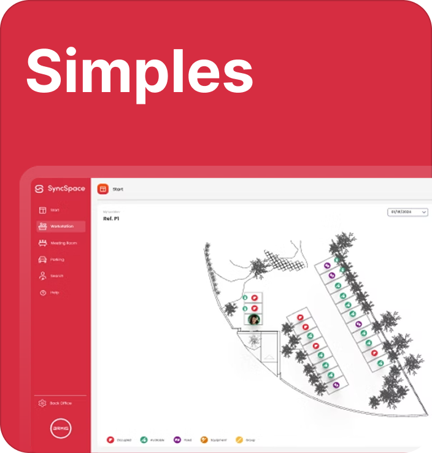
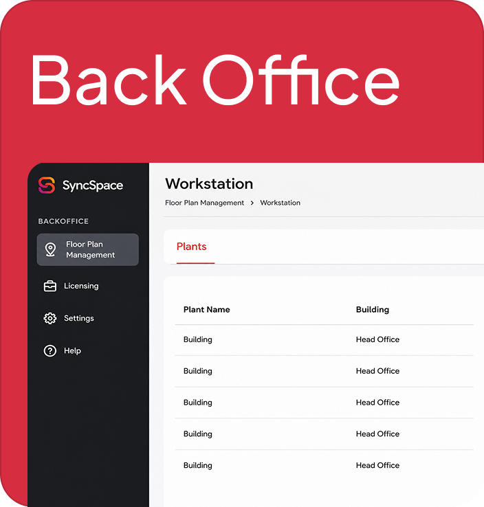

Syncspace
View all works →Project Overview
SyncSpace is an advanced platform tailored to seamlessly manage physical and hybrid workspaces.
. Integrated 100% with Microsoft 365, it redefines space management by allowing organizations to digitalize interactive floor plans, manage workstation bookings, optimize parking allocations (like EV charging spots), and seamlessly coordinate hybrid employee flows.
The Problem
The core complexity of SyncSpace doesn't live in the visible interface, it lives in the backend: linking a company's Microsoft 365 environment to SyncSpace's physical booking system requires complex integration strings and architecture work. For end-users, this meant the setup process was the single biggest barrier to adoption.
The real UX challenge wasn't "design a booking interface" — it was: how do you take a deeply technical configuration process and make it feel effortless to a non-technical office admin installing a Microsoft Teams plugin?
Research & Process
The core objective of this project was to design the user experience and user interface for the SyncSpace client-side Microsoft Teams plugin. Because the system relies heavily on complex integration strings and backend architecture to successfully link a company's Microsoft 365 environment with SyncSpace's physical booking features, the primary UX challenge was mapping out an effortless installation, configuration, and setup flow for end-users.
- End-to-end UX mapping & wireframing. Working closely with a design peer, I mapped the complete user journey across every Microsoft Teams touchpoint — install, configure, connect, manage — to make sure each step had a clear, intuitive structure before any UI was drawn.
- Onboarding & configuration strategy. I did a deep dive into the technical setup workflow itself: what background connections actually need to happen (Microsoft 365 permissions, tenant linking, space data sync), then reverse-engineered that complexity into a step-by-step flow a non-technical user could follow without needing IT support standing over their shoulder.
Design Decisions
- Guided, step-by-step installation panels instead of a single dense configuration screen — breaking the Microsoft 365 ↔ SyncSpace linking process into sequential, digestible steps so users always know what stage they're at and what's next.
- Setup dashboards that abstract away backend complexity the underlying integration strings and architecture stay invisible to the end-user; the interface only ever asks for what a human can reasonably answer (e.g., "which Microsoft 365 account," not raw API tokens).
- High-fidelity UI built for brand consistency with the main SyncSpace platform, so the Teams plugin feels like a natural extension of the product rather than a bolted-on integration.
- Full interaction behavior and edge-case mapping before handoff — every state (failed connection, partial setup, permission errors) was designed up front so engineering could build without guessing at undefined states.


Web Development
Beyond the plugin UX/UI, I independently developed, tested, and deployed the official SyncSpace marketing website, focused on clean code, performance, and accurate brand representation, giving the product a professional first touchpoint outside of the Teams plugin itself.
Outcome
The project delivered two connected results: a developer-ready, high-fidelity interface for the Microsoft Teams plugin, and a fully functional live website. The guided setup panels turned a dense, technical backend configuration into an onboarding flow that doesn't require technical knowledge to complete, giving SyncSpace a unified, professional entry point into hybrid workspace management.
Learn more about Synscpace →